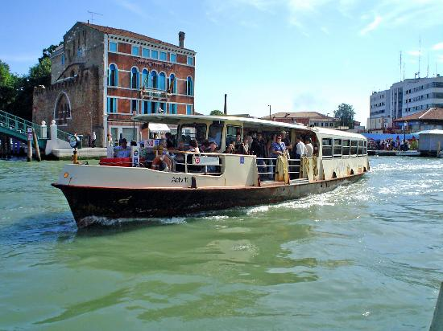
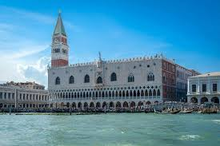
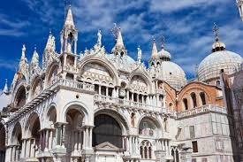

Kosten
Dit is de boot naar Burano:
per persoon: €20
 Zie op deze website
Zie op deze website
Trip naar de glasblazerij:
per persoon: €5
 Zie op deze website
Zie op deze website
Maskers maken:
Per persoon: €5
 Zie op deze website
Zie op deze website
Tripje met de gondel:
per persoon: €30
 Zie op deze website
Zie op deze website
Trip met vaporetto:
Per persoon: €15,50
 Zie op deze website
Bezoek aan het paleis Dodge:
Per persoon: €36
 Zie op deze website
Bezoek aan het museum De San Marco:
Per persoon: €32
 Zie op deze website